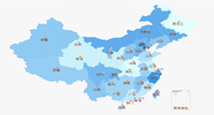
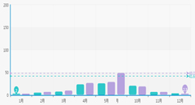
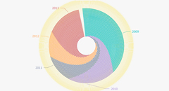
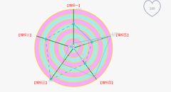
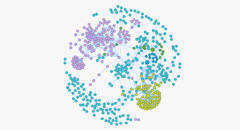
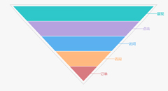
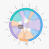
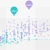
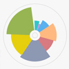
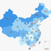

登录
|
平台介绍
王学锋
退出
平台介绍
首页
专业大数据分析系统
大数据分析能力开放系统
数据运营平台
云数据开放平台
知识库
专业大数据分析系统
大数据分析能力开放系统
数据运营平台
云数据开放平台
水稻稻飞虱专题
更多..

稻飞虱发生面积
稻飞虱长翅型成虫均能长距离迁飞。趋光性强，且喜趋嫩绿；但灰飞虱的趋光性稍弱。

稻飞虱发生地区
在华中稻区，迟熟早稻常易受害。灰飞虱为温带地区的害虫，适温为25℃左右，耐低温能力较强，而夏季高温则对其发育不利，华北地区7～8月降雨少的年份有利于大发生。

稻飞虱逐年发生情况
稻飞虱的发生与迁入虫量、气候、水稻品种和生育期、栽培管理技术、天敌有密切关系。
马铃薯晚疫病专题
更多..

马铃薯晚疫病发生面积
病菌喜日暖夜凉高湿条件，相对湿度95%以上、18～22℃条件下，有利于孢子囊的形成，冷凉（10～13℃，保持1～2小时）又有水滴存在。

马铃薯晚疫病灾害区域
病菌主要以菌丝体在薯块中越冬。播种带菌薯块，导致不发芽或发芽后出土即死去，有的出土后成为中心病株。

马铃薯晚疫病发生时期
选用无病种薯，减少初侵染源。做到秋收入窖、冬藏查窖、出窖、切块、春化等过程中，每次都要严格剔除病薯，有条件的要建立无病留种地，进行无病留种。
人气专题

稻飞虱迁移路径
稻飞虱属同翅目飞虱科。危害水稻的主要有褐飞虱、白背飞虱和灰飞虱三种..
热度
4202

稻飞虱分布
中国北方，长江流域以南各省(自治区)发生较多。朝鲜、南亚次大陆和东南..
热度
3338
专业报告

稻飞虱的危害有多大
白背飞虱迁入虫量是左右主害代发生程度的重要基础，而决定种群发展前提是食料..
热度
1489

稻飞虱主要影响地区
稻飞虱属同翅目飞虱科。危害水稻的主要有褐飞虱、白背飞虱和灰飞虱三种..
热度
1020
×
请登录..
账号：
密码：
copyright@2011 JinheTech.ALL rights reserved.版权所有金禾天成 京ICP备11009730